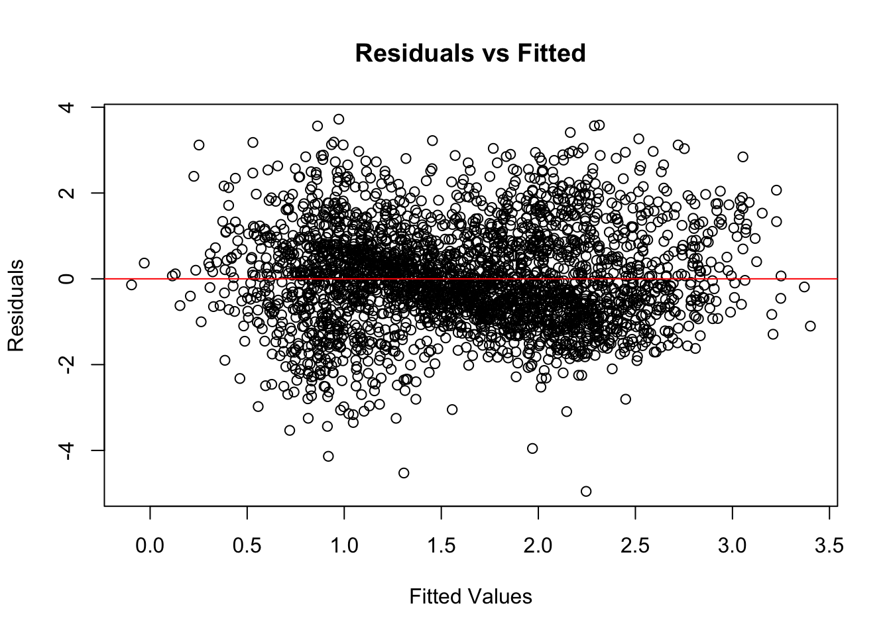
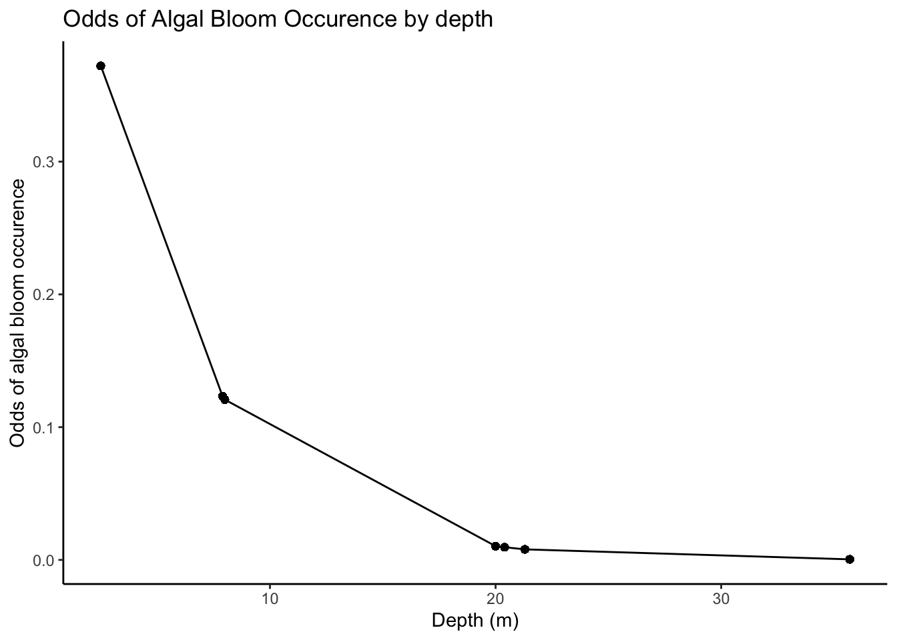
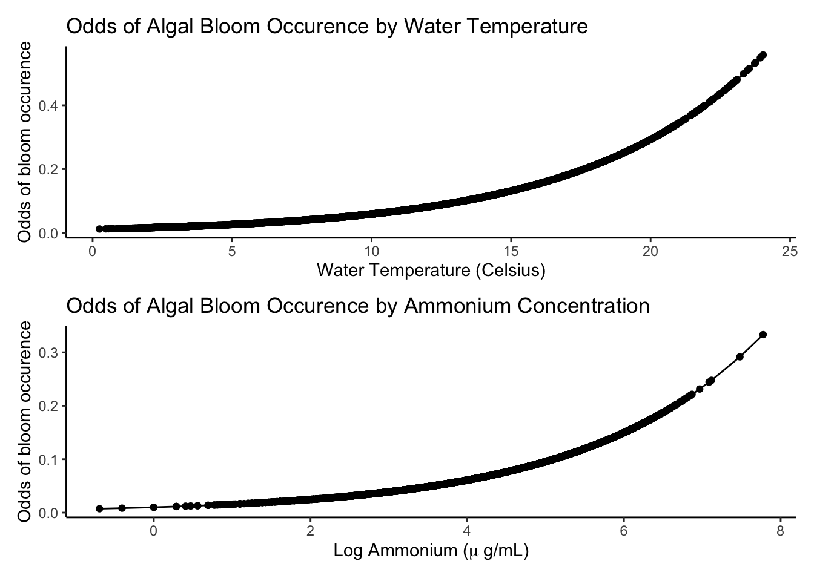
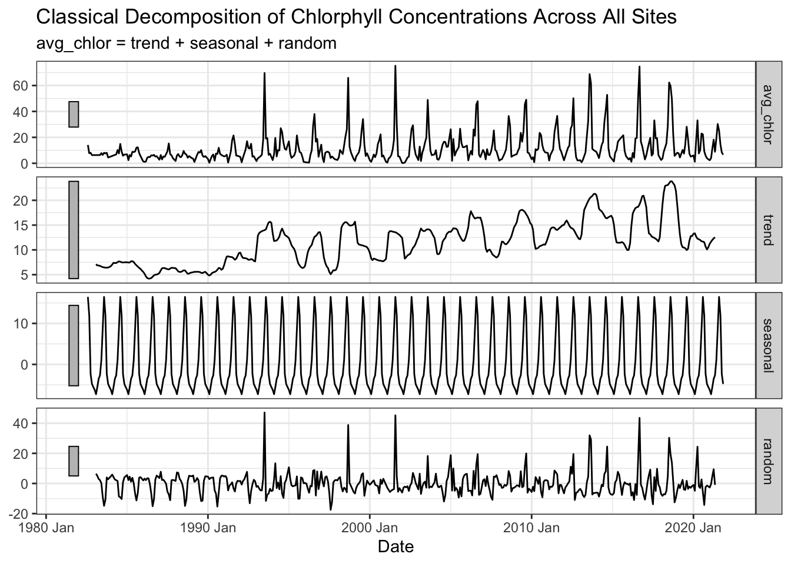

Factors influencing algal growth in aquatic systems
Predicting algal blooms using NTL LTER data
Author
Kat Le
Published
December 12, 2023
Background & Motivation
Algal blooms are defined as the rapid growth of tiny photosynthetic organisms in aquatic environments. Blooms can last for a few days to a few weeks, and sometimes, they can persist for months(Sellner, Doucette, and Kirkpatrick 2003). Algal blooms can be beneficial for removing carbon dioxide from the atmosphere, but the long-term impact of these blooms can be far more detrimental for aquatic ecosystems(Grattan, Holobaugh, and Morris 2016). These photosynthetic organisms can release neurotoxins that are harmful for most living organisms, and they can eventually create oxygen dead zones by being a source of nutrients for microbes (Misra, Chandra, and Raghavendra 2011).
This project is motivated by my time living and working in Pennsylvania. In the summer of 2019, I saw my first algal bloom occur in Lake Arrowhead, PA (pictured below). I was curious because it looked like someone had poured paint into the lake. I learned from local residents that these blooms are actually phytoplankton and that they have been seeing these blooms happen more frequently in lakes in the Poconos. In their experience, these blooms last a few days and often times, it will cause dead fish to float to the surface. This made me curious about what factors influence the occurrence of these algal blooms.
Lake Arrowhead, PA. July 2019.
Question
For this project, I am interested in the effects of available nutrients, water temperature, and light on predicting algal growth. In addition, I want to explore whether a change in depth, nutrients, and water temperature increases the odds that an algal bloom occurs within a lake. Finally, I want to assess the long-term trend of chlorophyll concentration in the core study lakes over the past 4 decades.
Data Source
I used data collected by the North Temperate Lakes LTER and stored in the Environmental Data Initiative (EDI) repository. I utilized data from 7 study lakes in Northern Wisconsin, where NTL LTER has been collecting data since 1981 until December 2022. The sites I chose were the study sites with the longest-running data: Crystal Bog, Trout Bog, Crystal Lake, Big Muskellunge, Sparking Lake, Allequash Lake, and Trout Lake. These lakes vary in physical dimensions, sources of water, shoreline development, and elevation.
For the first part of this analysis, I plotted the distribution of ammonium (a readily available nutrient for phytoplankton (Dai, Shang, and Qiu 2012)), water temperature, light, and depth of a lake. This step indicates to me that I should log-transform nutrient, light and chlorophyll data in order to assume a normal distribution for my linear model.
Nutrient, Water Temperature, Light, and Chlorophyll Histograms
Methods & Results
Multiple Linear Model
For this next step of my analysis, I am building a linear model with 3 predictor variables: nutrient concentration, water temperature, and light availability. The nutrient and light data have been log-transformed to assume a normal distribution. This is how I set up my linear model:
mod <-lm(log(chla) ~log(nh4) + wtemp +log(light), data = full_data)
This is my model output:
Code
tab_model(mod,pred.labels =c("Intercept", "log(NH4)", "Water Temp", "log(Light)"),dv.labels =c("log(Chlorophyll)"),string.ci ="Conf. Int (95%)",string.p ="P-value",title ="Multiple Linear Model Output",digits =4)
Multiple Linear Model Output
log(Chlorophyll)
Predictors
Estimates
Conf. Int (95%)
P-value
Intercept
-0.5746
-0.7803 – -0.3689
<0.001
log(NH4)
0.2144
0.1800 – 0.2488
<0.001
Water Temp
0.0951
0.0856 – 0.1047
<0.001
log(Light)
0.0993
0.0696 – 0.1291
<0.001
Observations
2827
R2 / R2 adjusted
0.230 / 0.229
Now, I want to assess the validity of my linear model by plotting the residuals:
Code
res_plot <-plot(fitted(mod), resid(mod),xlab ="Fitted Values",ylab ="Residuals",main ="Residuals vs Fitted") +abline(h =0, col ="red")

Plotting residuals to assess model performance
Code
res_plot
integer(0)
Logistic Model
In this next step of my analysis, I want to look at the odds of an algal bloom occurrence using depth of a lake, ammonium concentration, and water temperature as predictor variables. To do this, I transform chlorophyll concentrations to a binary response variable where 1 is the occurrence of a bloom and 0 is the absence of a bloom. Building off prior research, I am using 40 ug/mL as the detection limit for an algal bloom (Havens 1994).
# Depth OR Plotbloom_predict_depth <-glm(bloom ~ depth, data = full_data, family ="binomial") %>%augment(type.predict ="response") %>%mutate(y_hat = .fitted) %>%mutate(odds_hat = y_hat / (1- y_hat)) OR_depth_plot <-ggplot(bloom_predict_depth, aes(x = depth, y = odds_hat)) +geom_point() +geom_line() +scale_y_continuous("Odds of algal bloom occurence") +labs(title="Odds of Algal Bloom Occurence by depth",x ="Depth (m)") +theme_classic()OR_depth_plot

Odd Ratio of Bloom Occurrence by Depth
Code
# Ammonium OR Plotbloom_predict_nut <-glm(bloom ~log(nh4), data = full_data, family ="binomial") %>%augment(type.predict ="response") %>%mutate(y_hat = .fitted) %>%mutate(odds_hat = y_hat / (1- y_hat)) OR_nut_plot <-ggplot(bloom_predict_nut, aes(x =`log(nh4)`, y = odds_hat)) +geom_point() +geom_line() +scale_y_continuous("Odds of bloom occurence") +labs(title="Odds of Algal Bloom Occurence by Ammonium Concentration",x =bquote("Log Ammonium ("*mu~"g/mL)")) +theme_classic()# Water Temperature Plotbloom_predict_wat <-glm(bloom ~ wtemp, data = full_data, family ="binomial") %>%augment(type.predict ="response") %>%mutate(y_hat = .fitted) %>%mutate(odds_hat = y_hat / (1- y_hat)) OR_wat_plot <-ggplot(bloom_predict_wat, aes(x = wtemp, y = odds_hat)) +geom_point() +geom_line() +scale_y_continuous("Odds of bloom occurence") +labs(title="Odds of Algal Bloom Occurence by Water Temperature",x ="Water Temperature (Celsius)") +theme_classic()OR_wat_plot / OR_nut_plot

Odds Ratio of Bloom Occurrence by Ammonium and Water Temperature Data
Confusion Matrix
Now, I am creating a confusion matrix to assess my model’s performance:
Code
conf_matrix <- log_mod %>%augment(type.predict ="response") %>%mutate(y_hat =as.logical(round(.fitted))) %>%select(bloom, .fitted, y_hat) conf_matrix_fin =confusionMatrix(data =as.factor(conf_matrix$y_hat), reference =as.factor(conf_matrix$bloom))depth_cm_df <-as.data.frame(as.table(conf_matrix_fin))kable(depth_cm_df) %>%kable_styling() %>%add_header_above(c("Confusion Matrix for Logistic Model"=3)) %>%row_spec(seq(1, nrow(depth_cm_df), by =2), background ="#D3D3D3") %>%add_footnote("Model performed at a 92.8% accurracy level")
Confusion Matrix for Logistic Model
Prediction
Reference
Freq
FALSE
FALSE
2598
TRUE
FALSE
25
FALSE
TRUE
180
TRUE
TRUE
24
a Model performed at a 92.8% accurracy level
Table 4: Confusion Matrix to Assess Logistic Model Performance
Decomposition
Finally, I conducted a decomposition analysis to see if there is a long-term trend in chlorophyll concentrations across all of the core study lakes over the past 4 decades.
Code
decomp <- full_data %>%mutate(year_month =yearmonth(sampledate)) %>%group_by(year_month) %>%summarize(avg_chlor =mean(chla, na.rm =TRUE)) %>%tsibble(index = year_month) %>% tsibble::fill_gaps() %>%mutate(avg_chlor=if_else(is.nan(avg_chlor), NA, avg_chlor) %>%na.approx()) %>%model(classical_decomposition(avg_chlor, type ="additive"))autoplot(components(decomp)) +labs(title ="Classical Decomposition of Chlorphyll Concentrations Across All Sites",x ="Date") +theme_bw()

Classical Decomposition of Chlorophyll Concentrations over past 4 decades
Discussion
Based on the results of my multiple regression model (Table 2), normalized ammmonium concentration, water temperature, and light conditions can explain 23% of the variance in normalized chlorophyll concentrations in this dataset. One percentage point change in ammonium concentration results in a 0.21 change in normalized chorophyll concentration, holding all other variables constant (p < 0.001). Likewise, for every one degree Celsius change in water temperature, the normalized concentration of chlorophyll increases by 0.1 when all other variables are constant (p < 0.001). Finally, for every one percentage point change in available light, the normalized chlorophyll concentration increases by 0.1 when all other variables are constant (p < 0.001). When the residuals were plotted against the fitted values, there was an even spread of points across the plane, meaning this model met the assumptions of a linear model. Overall, this model can be improved by looking at other factors like wind, groundwater input, and visibility to explain more of the variance in chlorophyll.
Based on the results of my logit model (Table 3), a one meter increase in depth decreased the log odds by 18 percentage points (p < 0.001). This means that deeper lakes have less algal blooms. This model also shows that a one percentage point change in ammonium concentration results in an increase in the log odds of algal bloom occurrence by a factor of 2.13 (p < 0.001). In addition, when water temperature increased by one degree Celsius, the log odds of algal bloom occurrence slightly increased by a factor of 1.20 (p < 0.001). To assess my logit model’s performance, I created a confusion matrix to calculate the amount of true positives, true negatives, false positives, and false negatives (Table 4). To find the accuracy level, I added the count of true positives and true negatives and divided that by the total observations. The accuracy of my model is 92.8%. The confusion matrix shows that this model is better at predicting true negatives than true positives.
Based on the results of my decomposition analysis (Figure 7), there has been a slight increase over chlorophyll concentration over time across all sites from 1981-2022. This positive trend is very small though as evidence by the longer grey bar on the left of the trend panel. There is a small seasonal component to chlorophyll concentration across all sites, but most of the variation is explained by random noise in the data as evidenced by the short grey bar in the random panel.
Conclusion
Overall, ammonium concentration, water temperature, light, and depth all explain some variation in algal biomass. These explanatory variables can also help predict the presence of absence of a bloom, but the model needs to be improved by including more lakes with different depths. Additionally, chlorophyll concentration is slightly increasing over time across all lakes. For future work, I would analyze the effect of turbulence, wind and groundwater input to see if these variables can explain more of the variance in algal growth. I would also analyze the data by site to see if some lakes are increasing more in chlorophyll than others.
Literature Cited
Dai, Guo-Zheng, Jin-Long Shang, and Bao-Sheng Qiu. 2012. “Ammonia May Play an Important Role in the Succession of Cyanobacterial Blooms and the Distribution of Common Algal Species in Shallow Freshwater Lakes.”Global Change Biology 18 (5): 1571–81. https://doi.org/10.1111/j.1365-2486.2012.02638.x.
Grattan, Lynn M., Sailor Holobaugh, and J. Glenn Morris. 2016. “Harmful Algal Blooms and Public Health.”Harmful Algae 57 (July): 2–8. https://doi.org/10.1016/j.hal.2016.05.003.
Havens, Karl E. 1994. “Relationships of Annual ChlorophyllaMeans, Maxima, and Algal Bloom Frequencies in a Shallow Eutrophic Lake (Lake Okeechobee, Florida, USA).”Lake and Reservoir Management 10 (2): 133–36. https://doi.org/10.1080/07438149409354184.
Misra, A. K., Peeyush Chandra, and V. Raghavendra. 2011. “Modeling the Depletion of Dissolved Oxygen in a Lake Due to Algal Bloom: Effect of Time Delay.”Advances in Water Resources 34 (10): 1232–38. https://doi.org/10.1016/j.advwatres.2011.05.010.
Sellner, Kevin G., Gregory J. Doucette, and Gary J. Kirkpatrick. 2003. “Harmful Algal Blooms: Causes, Impacts and Detection.”Journal of Industrial Microbiology and Biotechnology 30 (7): 383–406. https://doi.org/10.1007/s10295-003-0074-9.